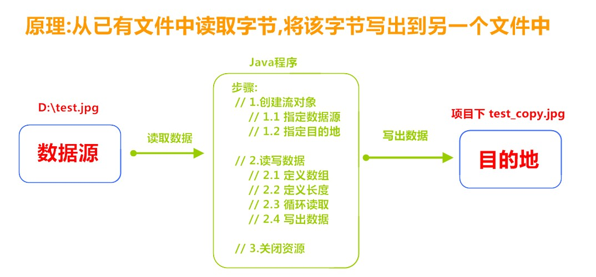
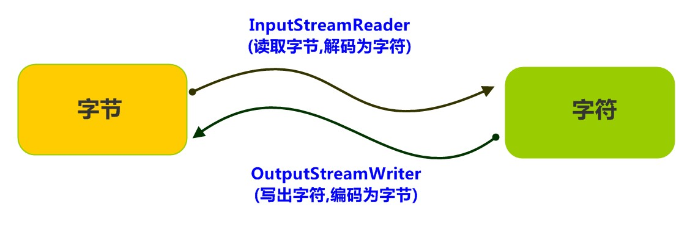
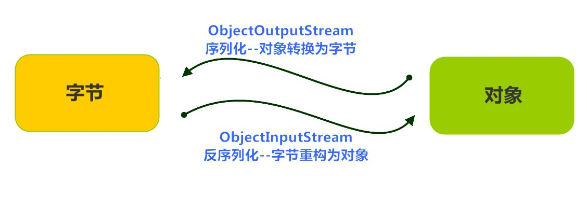
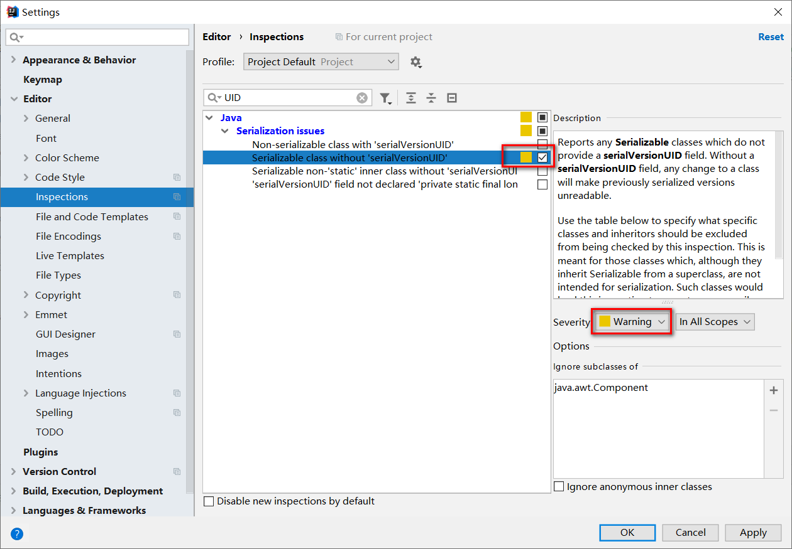
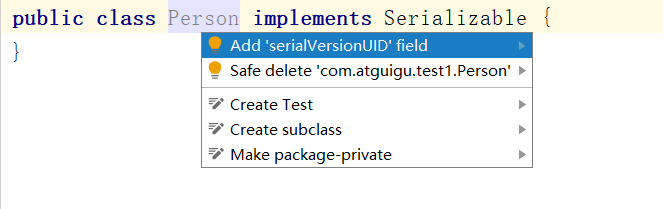

File类与流的概述¶
1. File概述¶
File类位于java.io.包下，用于操作文件和目录。File类能新建、删除、重命名文件和目录。
在API中File的解释是文件和目录路径名的抽象表示形式，即File类是文件或目录的路径，而不是文件本 身，因此File类不能直接访问文件内容本身，如果需要访问文件内容本身，则需要使用输入/输出流。
1.1 File类的构造方法¶
| 方法名 | 方法说明 |
|---|---|
| public File(String pathname) | 通过将给定的路径名字符串转换为抽象路径名来创建新的File实例。 |
| public File(String parent, String child) | 从父路径名字符串和子路径名字符串创建新的 File实例。 |
| public File(File parent, String child) | 从父抽象路径名和子路径名字符串创建新的File实例。 |
代码示例，有4中创建File类的方式
// 文件路径名
String pathname = "D:\\aaa.txt";
File file1 = new File(pathname);
// 文件路径名
String pathname2 = "D:\\aaa\\bbb.txt";
File file2 = new File(pathname2);
// 通过父路径和子路径字符串
String parent = "d:\\aaa";
String child = "bbb.txt";
File file3 = new File(parent, child);
// 通过父级File对象和子路径字符串
File parentDir = new File("d:\\aaa");
String child = "bbb.txt";
File file4 = new File(parentDir, child);
一个File对象代表硬盘中实际存在的一个文件或者目录。
无论该路径下是否存在文件或者目录，都不影响File对象的创建。
1.2 常用方法¶
1.2.1 获取文件和目录¶
| 方法名 | 方法说明 |
|---|---|
| public String getName() | 返回由此File表示的文件或目录的名称。 |
| public long length() | 返回由此File表示的文件的长度。 |
| public String getPath() | 将此File转换为路径名字符串。 |
| public long lastModified() | 返回File对象对应的文件或目录的最后修改时间（毫秒值） |
public class TestFile {
public static void main(String[] args) {
File f = new File("d:/aaa/bbb.txt");
System.out.println("文件构造路径:"+f.getPath());
System.out.println("文件名称:"+f.getName());
System.out.println("文件长度:"+f.length()+"字节");
File f2 = new File("d:/aaa");
System.out.println("目录构造路径:"+f2.getPath());
System.out.println("目录名称:"+f2.getName());
System.out.println("目录长度:"+f2.length()+"字节");
}
}
/*输出结果
文件构造路径:d:\aaa\bbb.java
文件名称:bbb.java
文件长度:636字节
文件最后修改时间：2019-07-23T22:01:32.065
目录构造路径:d:\aaa
目录名称:aaa
目录长度:4096字节
文件最后修改时间：2019-07-23T22:01:32.065
*/
API中说明：length()，表示文件的长度。但是File对象表示目录，则返回值未指定。
1.2.2 获取路径¶
| 方法名 | 方法说明 |
|---|---|
| public String getPath() | 将此File转换为路径名字符串。 |
| public String getAbsolutePath() | 返回此File的绝对路径名字符串。 |
| String getCanonicalPath() | 返回此File对象所对应的规范路径名。 |
File类可以使用文件路径字符串来创建File实例，该文件路径字符串既可以是绝对路径，也可以是相对路径。 默认情况下，系统总是依据用户的工作路径来解释相对路径，这个路径由系统属性“user.dir”指定，通常也就是运行Java虚拟机时所作的路径。
- 绝对路径：从盘符开始的路径，这是一个完整的路径。
- 相对路径：相对于项目目录的路径，这是一个便捷的路径，开发中经常使用。
- IDEA中 单元测试的相对路径的根路径是 模块；main方法的相对路径是 当前项目
- 规范路径：所谓规范路径名，即对路径中的“..”等进行解析后的路径名
Windows中 路径的分隔符为
\，因此再String字符串中使用\\转译成\Java程序支持将“/”当成平台无关的路径分隔符。或者直接使用File.separator常量值表示。
1.2.3 判断功能¶
| 方法名 | 方法说明 |
|---|---|
| public boolean exists() | 此File表示的文件或目录是否实际存在。 |
| public boolean isDirectory() | 此File表示的是否为目录。 |
| public boolean isFile() | 此File表示的是否为文件。 |
如果文件或目录不存在，那么exists()、isFile()和isDirectory()都是返回true
1.2.4 创建删除功能¶
| 方法名 | 方法说明 |
|---|---|
| public boolean createNewFile() | 当且仅当具有该名称的文件尚不存在时，创建一个新的空文件。 |
| public boolean delete() | 删除由此File表示的文件或目录。 只能删除空目录。 |
| public boolean mkdir() | 创建由此File表示的目录。 |
| public boolean mkdirs() | 创建由此File表示的目录，包括任何必需但不存在的父目录。 |
API中说明：delete方法，如果此File表示目录，则目录必须为空才能删除。
1.2.5 目录操作¶
| 方法名 | 方法说明 |
|---|---|
| public String[] list() | 返回一个String数组，表示该File目录中的所有子文件或目录。 |
| public File[] listFiles() | 返回一个File数组，表示该File目录中的所有的子文件或目录。 |
| public File[] listFiles(FileFilter filter) | 返回所有满足指定过滤器的文件和目录。 |
过滤器方法说明：
如果给定 filter 为 null，则接受所有路径名。否则，当且仅当在路径名上调用过滤器的FileFilter.accept(java.io.File) 方法返回 true 时，该路径名才满足过滤器。如果当前File对象不表示一个目录，或者发生 I/O 错误，则返回 null。
输出文件夹下所有文件夹及其行数示例
public class IOTest01 {
@Test
public void test1() throws IOException, ExecutionException, InterruptedException {
//15683
// File file = new File("E:\\_Code_");//78719
File file = new File("E:\\");//78719 78768
long start = System.currentTimeMillis();
int sum = getAllFile(file);
long end = System.currentTimeMillis();
System.out.println("总长度为：" + sum);
System.out.println("耗时：" + (end - start));
}
public int getAllFile(File file) throws IOException, ExecutionException, InterruptedException {
File[] files = file.listFiles();
if (files == null) {
return 0;
}
int sum = 0;
for (int i = 0; i < files.length; i++) {
if (files[i].isDirectory()) {
sum += getAllFile(files[i]);
} else {
if (files[i].getAbsolutePath().endsWith(".java")) {
String path = files[i].getAbsolutePath();
// sum += getLineCount(path);
GetLineCount count = new GetLineCount(path);
// int lineCount = count.getLineCount();
FutureTask<Integer> futureTask = new FutureTask<>(count);
// 需要先run，然后再通过 get 获取结果
futureTask.run();
Integer lineCount = futureTask.get();
sum += lineCount;
System.out.println(path + "\t文件行数为：" + lineCount);
}
}
}
return sum;
}
public int getLineCount(String path) throws IOException {
BufferedReader reader = new BufferedReader(new FileReader(path));
int sum = 0;
while (reader.readLine() != null) {
sum += 1;
}
return sum;
}
}
class GetLineCount implements Callable<Integer> {
private String path;
private Integer count = 0;
public GetLineCount(String path) {
this.path = path;
}
public int getLineCount() throws IOException {
BufferedReader reader = new BufferedReader(new FileReader(path));
while (reader.readLine() != null) {
count += 1;
}
return count;
}
public Integer getCount() {
return count;
}
@Override
public Integer call() throws Exception {
BufferedReader reader = new BufferedReader(new FileReader(path));
while (reader.readLine() != null) {
count += 1;
}
return count;
}
}
2. IO概述¶
2.1 流的分类¶
2.1.1 按数据流向：输入流和输出流¶
- 输入流 ：把数据从 其他设备 上读取到 内存 中的流。
- 以InputStream,Reader结尾
- 输出流 ：把数据从 内存 中写出到 其他设备 上的流。
- 以OutputStream、Writer结尾
2.1.2 按数据类型：字节流和字符流¶
- 字节流 ：以字节为单位，读写数据的流。
- 以InputStream和OutputStream结尾
- 字符流 ：以字符为单位，读写数据的流。
- 以Reader和Writer结尾
2.1.3 按IO流角色不同：节点流和处理流（包装流）¶
- 节点流：可以从或向一个特定的地方（节点）读写数据。如FileReader.
- 处理流：是对一个已存在的流进行连接和封装，通过所封装的流的功能调用实现数据读写。如BufferedReader.处理流的构造方法总是要带一个其他的流对象做参数。一个流对象经过其他流的多次包装，称为流的链接。
这种设计是装饰模式（Decorator Pattern）也称为包装模式（Wrapper Pattern），其使用一种对客户端透明的方式来动态地扩展对象的功能，它是通过继承扩展功能的替代方案之一。在现实生活中你也有很多装饰者的例子，例如：人需要各种各样的衣着，不管你穿着怎样，但是，对于你个人本质来说是不变的，充其量只是在外面加上了一些装饰，有，“遮羞的”、“保暖的”、“好看的”、“防雨的”....
常用的节点流：
- 文 件 FileInputStream FileOutputStrean FileReader FileWriter 文件进行处理的节点流。
- 字符串 StringReader StringWriter 对字符串进行处理的节点流。
- 数 组 ByteArrayInputStream ByteArrayOutputStream CharArrayReader CharArrayWriter 对数
- 组进行处理的节点流（对应的不再是文件，而是内存中的一个数组）。
- 管 道 PipedInputStream、PipedOutputStream、PipedReader、PipedWriter对管道进行处理的节点流。
常用处理流：
- 缓冲流：BufferedInputStream、BufferedOutputStream、BufferedReader、BufferedWriter---增加缓冲功能，避免频繁读写硬盘。
- 转换流：InputStreamReader、OutputStreamReader---实现字节流和字符流之间的转换。
- 数据流：DataInputStream、DataOutputStream -提供读写Java基础数据类型功能
- 对象流：ObjectInputStream、ObjectOutputStream--提供直接读写Java对象功能
2.2 IO流的基类¶
| 输入流 | 输出流 | |
|---|---|---|
| 字节流 | 字节输入流InputStream | 字节输出流OutputStream |
| 字符流 | 字符输入流Reader | 字符输出流Writer |
2.3 字节流¶
一切文件数据(文本、图片、视频等)在存储时，都是以二进制数字的形式保存，都一个一个的字节，那么传输时一样如此。所以，字节流可以传输任意文件数据。在操作流的时候，我们要时刻明确，无论使用什么样的流对象，底层传输的始终为二进制数据。
2.3.1 字节输出流【OutputStream】¶
java.io.OutputStream 抽象类是表示字节输出流的所有类的超类，将指定的字节信息写出到目的地。它定义了字节输出流的基本共性功能方法。
常用API
| 方法名 | 方法简述 |
|---|---|
| public void close() | 关闭此输出流并释放与此流相关联的任何系统资源。 |
| public void flush() | 刷新此输出流并强制任何缓冲的输出字节被写出。 |
| public void write(byte[] b) | 将 b.length字节从指定的字节数组写入此输出流。 |
| public void write(byte[] b, int off, int len) | 从指定的字节数组写入 len字节，从偏移量 off开始输出到此输出流。 |
| public abstract void write(int b) | 将指定的字节输出流。 |
注意：当流操作完毕时必须关闭资源 close()方法
FileOutputStream
OutputStream 有很多子类，我们从最简单的一个子类开始。java.io.FileOutputStream 类是文件输出流，用于将数据写出到文件。
构造方法
| 方法名 | 方法简述 |
|---|---|
| public FileOutputStream(File file[,boolean append]) | 创建文件输出流以写入由指定的 File对象表示的文件。第二个参数为是否续写 |
| public FileOutputStream(String name[,boolean append]) | 创建文件输出流以指定的名称写入文件。第二个参数为是否续写 |
当你创建一个流对象时，必须传入一个文件路径。该路径下，如果没有这个文件，会创建该文件。如果有这个文件，会清空这个文件的数据。
代码示例：FileOutputStream的各种操作
// 写出字节
@Test
public void test1(){
// 使用文件名称创建流对象
FileOutputStream fos = new FileOutputStream("fos.txt");
// 写出数据
fos.write(97); // 写出第1个字节
fos.write(98); // 写出第2个字节
fos.write(99); // 写出第3个字节
// 关闭资源
fos.close();
/*输出结果：
abc
*/
}
// 写出字节数组
@Test
public void test2(){
// 使用文件名称创建流对象
FileOutputStream fos = new FileOutputStream("fos.txt");
// 字符串转换为字节数组
byte[] b = "尚硅谷".getBytes();
// 写出字节数组数据
fos.write(b);
// 关闭资源
fos.close();
/*
输出结果：
尚硅谷
*/
}
// 数据追加续写
@Test
public void test4(){
// 使用文件名称创建流对象
FileOutputStream fos = new FileOutputStream("fos.txt"，true);
// 字符串转换为字节数组
byte[] b = "abcde".getBytes();
// 写出从索引2开始，2个字节。索引2是c，两个字节，也就是cd。
fos.write(b);
// 关闭资源
fos.close();
/*
文件操作前：cd
文件操作后：cdabcde
*/
}
2.3.2 字节输入流【InputStream】¶
java.io.InputStream 抽象类是表示字节输入流的所有类的超类，可以读取字节信息到内存中。它定义了字节输入流的基本共性功能方法。
常用方法
| 方法名 | 方法简述 |
|---|---|
| public void close() | 关闭此输入流并释放与此流相关联的任何系统资源。 |
| public abstract int read() | 从输入流读取数据的下一个字节。 |
| public int read(byte[] b) | 从输入流中读取一些字节数，并将它们存储到字节数组 b中 。 |
FileInputStream
java.io.FileInputStream 类是文件输入流，从文件中读取字节。
构造方法
| 方法名 | 方法简述 |
|---|---|
| FileInputStream(File file) | 通过打开与实际文件的连接来创建一个 FileInputStream，该文件由文件系统中的 File对象 file命名。 |
| FileInputStream(String name) | 通过打开与实际文件的连接来创建一个 |
| FileInputStream | 该文件由文件系统中的路径名 name命名。 |
当你创建一个流对象时，必须传入一个文件路径。该路径下，如果没有该文件,会抛出FileNotFoundException 。
代码示例FileInputStream的各种操作
// 读取字节： read 方法，每次可以读取一个字节的数据，提升为int类型，读取到文件末尾则返回 -1
@Test
public void test1(){
// 使用文件名称创建流对象
FileInputStream fis = new FileInputStream("read.txt");
// 定义变量，保存数据
int b ;
// 循环读取
while ((b = fis.read())!=-1) {
System.out.println((char)b);
}
// 关闭资源
fis.close();
}
//使用字节数组读取： read(byte[] b) ，每次读取b的长度个字节到数组中，返回读取到的有效字节个数，读取到末尾时，返回 -1
@Test
public void test2(){
// 使用文件名称创建流对象.
FileInputStream fis = new FileInputStream("read.txt"); // 文件中为abcde
// 定义变量，作为有效个数
int len ;
// 定义字节数组，作为装字节数据的容器
byte[] b = new byte[2];
// 循环读取
while (( len= fis.read(b))!=-1) {
// 每次读取后,把数组变成字符串打印
System.out.println(new String(b,0,len));
}
// 关闭资源
fis.close();
}
2.3.3 图片复制案例¶

代码
public class Copy {
public static void main(String[] args) throws IOException {
// 1.创建流对象
// 1.1 指定数据源
FileInputStream fis = new FileInputStream("D:\\test.jpg");
// 1.2 指定目的地
FileOutputStream fos = new FileOutputStream("test_copy.jpg");
// 2.读写数据
// 2.1 定义数组
byte[] b = new byte[1024];
// 2.2 定义长度
int len;
// 2.3 循环读取
while ((len = fis.read(b))!=-1) {
// 2.4 写出数据
fos.write(b, 0 , len);
}
// 3.关闭资源
fos.close();
fis.close();
}
}
2.4 字符流¶
Java提供一些字符流类，以字符为单位读写数据，专门用于处理文本文件。以防止字节流读取时无法读取完整的字符数据。
2.4.1 字符输入流【Reader】¶
java.io.Reader 抽象类是表示用于读取字符流的所有类的超类，可以读取字符信息到内存中。它定义了字符输入流的基本共性功能方法。
常用API
| 方法名 | 方法简述 |
|---|---|
| public void close() | 关闭此流并释放与此流相关联的任何系统资源。 |
| public int read() | 从输入流读取一个字符。 |
| public int read(char[] cbuf) | 从输入流中读取一些字符，并将它们存储到字符数组 cbuf中 。 |
FileReader类
java.io.FileReader 类是读取字符文件的便利类。构造时使用系统默认的字符编码和默认字节缓冲区。
字符编码：字节与字符的对应规则。Windows系统的中文编码默认是GBK编码表。 eclipse中默认GBK，idea中默认UTF-8。
字节缓冲区：一个字节数组，用来临时存储字节数据。
构造方法
| 方法名 | 方法简述 |
|---|---|
| FileReader(File file) | 创建一个新的 FileReader ，给定要读取的File对象。 |
| FileReader(String fileName) | 创建一个新的 FileReader ，给定要读取的文件的名称。 |
代码示例：FileReader的各种操作
//读取字符： read 方法，每次可以读取一个字符的数据，提升为int类型，读取到文件末尾，返回 -1
@Test
public void test1(){
// 使用文件名称创建流对象
FileReader fr = new FileReader("read.txt");
// 定义变量，保存数据;
int b;
// 循环读取
while ((b = fr.read())!=-1) {
// 虽然每次只读一个字符，但是会自动提升为int类型。
System.out.println((char)b);
}
// 关闭资源
fr.close();
}
//使用字符数组读取： read(char[] cbuf) ，每次读取b的长度个字符到数组中，返回读取到的有效字符个数，读取到末尾时，返回 -1
@Test
public void test2(){
// 使用文件名称创建流对象
FileReader fr = new FileReader("read.txt");
// 定义变量，保存有效字符个数
int len ;
// 定义字符数组，作为装字符数据的容器
char[] cbuf = new char[2];
// 循环读取
while ((len = fr.read(cbuf))!=-1) {
System.out.println(new String(cbuf,0,len));
}
// 关闭资源
fr.close();
}
2.4.2 字符输出流【Writer】¶
java.io.Writer 抽象类是表示用于写出字符流的所有类的超类，将指定的字符信息写出到目的地。它定义了字节输出流的基本共性功能方法。
常用API
| 方法名 | 方法简述 |
|---|---|
| void write(int c) | 写入单个字符。 |
| void write(char[] cbuf) | 写入字符数组。 |
| abstract void write(char[] cbuf, int off, int len) | 写入字符数组的某一部分,off数组的开始索引,len写的字符个数。 |
| void write(String str) | 写入字符串。 |
| void write(String str, int off, int len) | 写入字符串的某一部分,off字符串的开始索引,len写的字符个数。 |
| void flush() | 刷新该流的缓冲。 |
| void close() | 关闭此流，但要先刷新它。 |
FileWriter类
java.io.FileWriter 类是写出字符到文件的便利类。构造时使用系统默认的字符编码和默认字节缓冲区。
构造方法
| 方法名 | 方法简述 |
|---|---|
| FileWriter(File file) | 创建一个新的 FileWriter，给定要读取的File对象。 |
| FileWriter(String fileName) | 创建一个新的 FileWriter，给定要读取的文件的名称。 |
代码示例：FileWriter的各种操作
//写出字符： write(int b) 方法，每次可以写出一个字符数据，代码使用演示：
@Test
public void test1(){
FileWriter fw = new FileWriter("fw.txt");
// 写出数据
fw.write(97); // 写出第1个字符
fw.write('b'); // 写出第2个字符
fw.close();
}
虽然参数为int类型四个字节，但是只会保留一个字符的信息写出。
未调用close方法，数据只是保存到了缓冲区，并未写出到文件中。
// 写出字符数组 ： write(char[] cbuf) 和 write(char[] cbuf, int off, int len) ，每次可以写出字符数组中的数据
@Test
public void test2(){
// 使用文件名称创建流对象
FileWriter fw = new FileWriter("fw.txt");
// 字符串转换为字节数组
char[] chars = "尚硅谷".toCharArray();
// 写出字符数组
fw.write(chars); // 尚硅谷
// 写出从索引1开始，2个字节。索引1是'硅' ，两个字节，也就是'硅谷'。
fw.write(b,1,2); // 硅谷
// 关闭资源
fos.close();
}
//写出字符串： write(String str) 和 write(String str, int off, int len) ，每次可以写出字符串中的数据
@Test
public void test3(){
// 使用文件名称创建流对象
FileWriter fw = new FileWriter("fw.txt");
// 字符串
String msg =
"尚硅谷";
// 写出字符数组
fw.write(msg); //尚硅谷
// 写出从索引1开始，2个字节。索引1是'硅'，两个字节，也就是'硅谷'。
fw.write(msg,1,2); // 尚硅谷
// 关闭资源
fos.close();
}
2.5 关闭和刷新¶
因为内置缓冲区的原因，如果不关闭输出流，无法写出字符到文件中。但是关闭的流对象，是无法继续写出数据的。如果我们既想写出数据，又想继续使用流，就需要 flush 方法了。
- flush ：刷新缓冲区，流对象可以继续使用。
- close :先刷新缓冲区，然后通知系统释放资源。流对象不可以再被使用了。
@Test
public void test4(){
// 使用文件名称创建流对象
FileWriter fw = new FileWriter("fw.txt");
// 写出数据，通过flush
fw.write('刷'); // 写出第1个字符
fw.flush();
fw.write('新'); // 继续写出第2个字符，写出成功
fw.flush();
// 写出数据，通过close
fw.write('关'); // 写出第1个字符
fw.close();
fw.write('闭'); // 继续写出第2个字符,【报错】java.io.IOException: Streamclosed
fw.close();
}
注意：即便是flush方法写出了数据，操作的最后还是要调用close方法，释放系统资源。
2.6 缓冲流¶
缓冲流,也叫高效流，按照数据类型分类：
- 字节缓冲流： BufferedInputStream ， BufferedOutputStream
- 字符缓冲流： BufferedReader ， BufferedWriter
缓冲流的基本原理：在创建流对象时，会创建一个内置的默认大小的缓冲区数组，通过缓冲区读写，减少系统IO次数，从而提高读写的效率。
2.6.1 字节缓冲流¶
构造方法
| 构造器名称 | 构造器说明 |
|---|---|
| public BufferedInputStream(InputStream in) | 创建一个 新的缓冲输入流。 |
| public BufferedOutputStream(OutputStream out) | 创建一个新的缓冲输出流。 |
构造方法相当于给输入输出流包装了一层（设计模式之包装模式）
// 创建字节缓冲输入流
BufferedInputStream bis = new BufferedInputStream(new FileInputStream("bis.txt"));
// 创建字节缓冲输出流
BufferedOutputStream bos = new BufferedOutputStream(new FileOutputStream("bos.txt"));
缓冲流效率测试
经过效率的是，缓冲流的读取/写入速度使远快于基本流的。
基本流，代码如下
public class BufferedDemo {
public static void main(String[] args) throws IOException {
// 记录开始时间
long start = System.currentTimeMillis();
// 创建流对象
FileInputStream fis = new FileInputStream("jdk9.exe");
FileOutputStream fos = new FileOutputStream("copy.exe");
// 读写数据
int b;
while ((b = fis.read()) != -1) {
fos.write(b);
}
fos.close();
fis.close();
// 记录结束时间
long end = System.currentTimeMillis();
System.out.println("普通流复制时间:"+(end - start)+" 毫秒");
}
}
// 十几分钟还没好
缓冲流，代码如下：
public class BufferedDemo {
public static void main(String[] args) throws IOException {
// 记录开始时间
long start = System.currentTimeMillis();
// 创建流对象
BufferedInputStream bis = new BufferedInputStream(new FileInputStream("jdk9.exe"));
BufferedOutputStream bos = new BufferedOutputStream(new FileOutputStream("copy.exe"));
// 读写数据
int b;
while ((b = bis.read()) != -1) {
bos.write(b);
}
bos.close();
bis.close();
// 记录结束时间
long end = System.currentTimeMillis();
System.out.println("缓冲流复制时间:"+(end - start)+" 毫秒");
}
}
// 8016ms
使用数组配合缓冲流
public class BufferedDemo {
public static void main(String[] args) throws IOException {
// 记录开始时间
long start = System.currentTimeMillis();
// 创建流对象
BufferedInputStream bis = new BufferedInputStream(new FileInputStream("jdk9.exe"));
BufferedOutputStream bos = new BufferedOutputStream(new FileOutputStream("copy.exe"));
// 读写数据
int len;
byte[] bytes = new byte[8*1024];
while ((len = bis.read(bytes)) != -1) {
bos.write(bytes, 0 , len);
}
bos.close();
bis.close();
// 记录结束时间
long end = System.currentTimeMillis();
System.out.println("缓冲流使用数组复制时间:"+(end - start)+" 毫秒");
}
}
// 缓冲流使用数组复制时间:666 毫秒
2.6.2 字符缓冲流¶
构造方法
| 构造器名称 | 构造器说明 |
|---|---|
| public BufferedReader(Reader in) | 创建一个 新的缓冲输入流。 |
| public BufferedWriter(Writer out) | 创建一个新的缓冲输出流。 |
一般可以写成如下形式
// 创建字符缓冲输入流
BufferedReader br = new BufferedReader(new FileReader("br.txt"));
// 创建字符缓冲输出流
BufferedWriter bw = new BufferedWriter(new FileWriter("bw.txt"));
特有方法
| 类名 | 方法名称 | 方法说明 |
|---|---|---|
| BufferedReader | public String readLine() | 读一行文字。 |
| BufferedWriter | public void newLine() | 写一行行分隔符,由系统属性定义符号。 |
特有方法演示
// readLine方法
@Test
public void test1(){
// 创建流对象
BufferedReader br = new BufferedReader(new FileReader("in.txt"));
// 定义字符串,保存读取的一行文字
String line = null;
// 循环读取,读取到最后返回null
while ((line = br.readLine())!=null) {
System.out.print(line);
System.out.println(" ------ ");
}
// 释放资源
br.close();
}
// newLine方法
@Test
public void test2(){
// 创建流对象
BufferedWriter bw = new BufferedWriter(new FileWriter("out.txt"));
// 写出数据
bw.write("尚");
// 写出换行
bw.newLine();
bw.write("硅");
bw.newLine();
bw.write("谷");
bw.newLine();
// 释放资源
bw.close();
}
2.7 转换流¶
2.7.1 编码简介¶
编码：按照某种规则，将字符存储到计算机中。
解码：将存储在计算机中的二进制数按照某种规则解析显示出来。
编码:字符(能看懂的)--字节(看不懂的)
解码:字节(看不懂的)→字符(能看懂的)
2.7.2 转换流¶
转换流简单示意图

2.7.3 InputStreamReader类¶
转换流 java.io.InputStreamReader ，是Reader的子类，是从字节流到字符流的桥梁。它读取字节，并使用指定的字符集将其解码为字符。它的字符集可以由名称指定，也可以接受平台的默认字符集。
构造方法
| 构造器名称 | 说明 |
|---|---|
| InputStreamReader(InputStream in) | 创建一个使用默认字符集的字符流。 |
| InputStreamReader(InputStream in, String charsetName) | 创建一个指定字符集的字符流。 |
构造举例，代码如下：
InputStreamReader isr = new InputStreamReader(new FileInputStream("in.txt"));
InputStreamReader isr2 = new InputStreamReader(new FileInputStream("in.txt"),"GBK");
指定编码读取
public class ReaderDemo2 {
public static void main(String[] args) throws IOException {
// 定义文件路径,文件为gbk编码
String FileName = "E:\\file_gbk.txt";
// 创建流对象,默认UTF8编码
InputStreamReader isr = new InputStreamReader(new FileInputStream(FileName));
// 创建流对象,指定GBK编码
InputStreamReader isr2 = new InputStreamReader(new FileInputStream(FileName) ,"GBK");
// 定义变量,保存字符
int read;
// 使用默认编码字符流读取,乱码
while ((read = isr.read()) != -1) {
System.out.print((char)read); // ��Һ�
}
isr.close();
// 使用指定编码字符流读取,正常解析
while ((read = isr2.read()) != -1) {
System.out.print((char)read);// 大家好
}
isr2.close();
}
}
2.7.4 OutputStreamWriter类¶
转换流 java.io.OutputStreamWriter ，是Writer的子类，是从字符流到字节流的桥梁。使用指定的字符集将字符编码为字节。它的字符集可以由名称指定，也可以接受平台的默认字符集。
构造方法
| 构造器名称 | 说明 |
|---|---|
| OutputStreamWriter(OutputStream in) | 创建一个使用默认字符集的字符流。 |
| OutputStreamWriter(OutputStream in, String charsetName) | 创建一个指定字符集的字符流。 |
构造器代码示例：相当于装修模式
OutputStreamWriter isr = new OutputStreamWriter(new FileOutputStream("out.txt"));
OutputStreamWriter isr2 = new OutputStreamWriter(new FileOutputStream("out.txt"), "GBK");
指定编码写出
public class OutputDemo {
public static void main(String[] args) throws IOException {
// 定义文件路径
String FileName = "E:\\out.txt";
// 创建流对象,默认UTF8编码
OutputStreamWriter osw = new OutputStreamWriter(new FileOutputStream(FileName));
// 写出数据
osw.write("你好"); // 保存为6个字节
osw.close();
// 定义文件路径
String FileName2 = "E:\\out2.txt";
// 创建流对象,指定GBK编码
OutputStreamWriter osw2 = new OutputStreamWriter(new FileOutputStream(FileName2), "GBK");
// 写出数据
osw2.write("你好");// 保存为4个字节
osw2.close();
}
}
2.8 对象流¶
Java 提供了一种对象序列化的机制。用字节序列可以表示一个对象，该字节序列包含该 对象的类型 和 对象中存储的属性等信息。字节序列写出到文件之后，相当于文件中持久保存了一个对象的信息。
反之，该字节序列还可以从文件中读取回来，重构对象，对它进行反序列化。 对象的数据 、 对象的类型和 对象中存储的数据 信息，都可以用来在内存中创建对象。看图理解序列化：

2.8.1 ObjectOutputStream类¶
java.io.ObjectOutputStream 类，将Java对象的原始数据类型写出到文件,实现对象的持久存储
构造方法
| 方法名称 | 方法说明 |
|---|---|
| public ObjectOutputStream(OutputStream out) | 创建一个指定OutputStream的ObjectOutputStream。 |
FileOutputStream fileOut = new FileOutputStream("employee.txt");
ObjectOutputStream out = new ObjectOutputStream(fileOut);
序列化操作
- 该类必须实现 java.io.Serializable 接口
-
如果对象的某个属性也是引用数据类型，那么如果该属性也要序列化的话，也要实现Serializable 接口
-
该类的所有属性必须是可序列化的。如果有一个属性不需要可序列化的，则该属性必须注明是瞬态的，使用 transient 关键字修饰。（比如网络中传输时，考虑安全因素银行卡字段可以使用transient不进行序列化）
-
静态变量的值不会序列化
写出对象方法
// 实现了Serializable接口的类
class Employee implements Serializable {
String name;
Integer age;
String address;
}
public final void writeObject (Object obj) 将指定的对象写出。
@Test
public void testOutput(){
Employee e = new Employee();
e.name = "zhangsan";
e.address = "beiqinglu";
e.age = 20;
try {
// 创建序列化流对象
ObjectOutputStream out = new ObjectOutputStream(new FileOutputStream("employee.txt"));
// 写出对象
out.writeObject(e);
// 释放资源
out.close();
// fileOut.close();
System.out.println("Serialized data is saved"); // 姓名，地址被序列化，年龄没有被序列化。
} catch (IOException i) {
i.printStackTrace();
}
}
2.8.2 ObjectInputStream类¶
ObjectInputStream反序列化流，将之前使用ObjectOutputStream序列化的原始数据恢复为对象。
构造方法
| 方法名称 | 方法简述 |
|---|---|
| public ObjectInputStream(InputStream in) | 创建一个指定InputStream的ObjectInputStream。 |
反序列化操作
若JVM能找到一个对象的class文件，我们可以进行反序列化操作，调用 ObjectInputStream 读取对象的方法
public final Object readObject () 读取一个对象。
public class DeserializeDemo {
public static void main(String [] args) {
Employee e = null;
try {
// 创建反序列化流
FileInputStream fileIn = new FileInputStream("employee.txt");
ObjectInputStream in = new ObjectInputStream(fileIn);
// 读取一个对象
e = (Employee) in.readObject();
// 释放资源
in.close();
fileIn.close();
}catch(IOException i) {
// 捕获其他异常
i.printStackTrace();
return;
}catch(ClassNotFoundException c) {
// 捕获类找不到异常
System.out.println("Employee class not found");
c.printStackTrace();
return;
}
// 无异常,直接打印输出
System.out.println("Name: " + e.name); // zhangsan
System.out.println("Address: " + e.address); // beiqinglu
System.out.println("age: " + e.age); // 0
}
}
注意点
当JVM反序列化对象时，能找到class文件，但是class文件在序列化对象之后发生了修改，那么反序列化操作也会失败，抛出一个 InvalidClassException 异常。有以下两个原因（序列化前后被修改）：
- 该类的序列版本号与从流中读取的类描述符的版本号不匹配
- 该类包含未知数据类型
Serializable 接口给需要序列化的类，提供了一个序列版本号。 serialVersionUID 该版本号的目的在于验证序列化的对象和对应类是否版本匹配。
public class Employee implements java.io.Serializable {
// 加入序列版本号
private static final long serialVersionUID = 1L;
public String name;
public String address;
// 添加新的属性 ,重新编译, 可以反序列化,该属性赋为默认值.
public int eid;
public void addressCheck() {
System.out.println("Address check : " + name + "--" + address);
}
}
2.8 IDEA自动生成 serialVersionUID


2.9 数据流（了解）¶
数据流可以在程序中直接处理Java的基础数据类型。
String name = “巫师”;
int age = 300;
char gender = ‘男’;
int energy = 5000;
double price = 75.5;
boolean relive = true;
使用DataOutputStream进行写
使用DataInputStream进行读取
@Test
public void save() throws IOException {
String name = "巫师";
int age = 300;
char gender = '男';
int energy = 5000;
double price = 75.5;
boolean relive = true;
// 将数据流写出
DataOutputStream dos = new DataOutputStream(new FileOutputStream("game.dat"));
dos.writeUTF(name);
dos.writeInt(age);
dos.writeChar(gender);
dos.writeInt(energy);
dos.writeDouble(price);
dos.writeBoolean(relive);
dos.close();
}
@Test
public void reload() throws IOException {
// 读取数据流
DataInputStream dis = new DataInputStream(new FileInputStream("game.dat"));
String name = dis.readUTF();
int age = dis.readInt();
char gender = dis.readChar();
int energy = dis.readInt();
double price = dis.readDouble();
boolean relive = dis.readBoolean();
System.out.println(name + "," + age + "," + gender + "," + energy + "," + price + "," + relive);
dis.close();
}
注意，读取顺序必须与存的顺序一致，否则会导致数据都不准确的现象
2.10 打印流与标准输入输出流¶
打印流PrintStream与PrintWriter
打印流只有输出没有输入
构造方法
| 构造方法名 | 方法说明 |
|---|---|
| public PrintStream(String fileName) | 使用指定的文件名创建一个新的字节打印流。 |
| public PrintWriter(String fileName) | 使用指定的文件名创建一个新的字符打印流。 |
| PrintWriter(OutputStream out, boolean autoFlush) | 基于字符输出流创建一个自动刷新的字符打印流 |
构造器示例
PrintStream ps = new PrintStream("ps.txt");
PrintWriter pw = new PrintWriter("pw.txt");
PrintWriter pw2 = new PrintWriter(new FileOutputStream("pw2.txt"),true);
输出流代码示例
@Test
public void test1() throws IOException {
PrintStream printStream = new PrintStream(new FileOutputStream("text2.txt",true));
printStream.write(97);
printStream.write("abaaba".getBytes());
printStream.close();
}
2.11 标准输入/输出流¶
System类中有三个属性字段：
| 修饰符和类型 | 属性和描述 |
|---|---|
| static PrintStream | err The "standard" error output stream. |
| static InputStream | in The "standard" input stream. |
| static PrintStream | out The "standard" output stream. |
- System.in 标准输入流，本质是一个字节输入流，默认接受键盘录入的数据。
- System.out 标准输出流，本质是一个字节输出流，默认输出数据到控制台。
- System.out 标准错误提示流，本质是一个字节输出流，默认输出到控制台。
既然是流对象，就可以改变标准输出流的流向。
public class PrintDemo {
public static void main(String[] args) throws IOException {
// 调用系统的打印流,控制台直接输出97
System.out.println(97);
// 创建字节打印流,指定文件的名称
PrintStream ps = new PrintStream("ps.txt");
// 设置系统的打印流流向,输出到ps.txt
System.setOut(ps);
// 调用系统的打印流,ps.txt中输出97
System.out.println(97);
}
}
本文总阅读量次